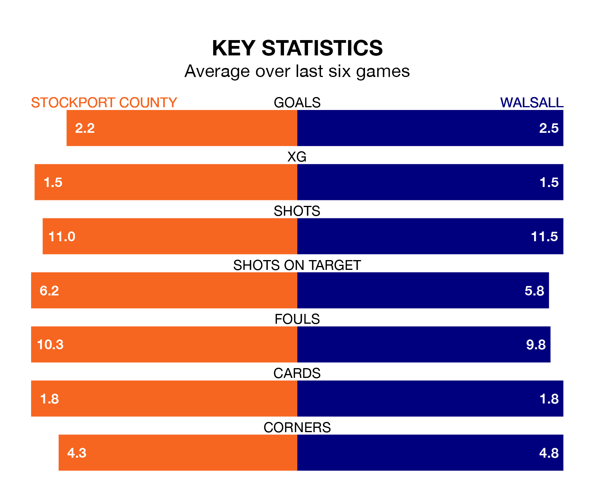

Stockport County host Walsall in Saturday's match at Edgeley Park looking to bounce back from defeat last time out in EFL League Two.
The Hatters, who sit top of the league after 26 games, fell to a 2-0 home defeat to Mansfield Town on January 1.
They face a Walsall side who picked up a win in their last match, a 6-1 victory against Grimsby Town, and who sit 13th in the table.
With 53 goals in 26 games so far this season, Stockport are the league's second-highest scorers with 2.0 goals per game. And they are conceding fewer than average, letting in 26 goals at a rate of 1.0 per game.
Walsall are also above average scorers, with 1.6 goals per game, compared to a league average of 1.5. They have conceded 1.4 goals per game.
In Ben Hinchiffe, County can rely on one of the league's safest pair of hands. He has kept 10 clean sheets in his 26 appearances this season, and no 'keeper has prevented the opposition scoring more often in EFL League Two.
In the Saddlers's net, Owen Evans has three clean sheets in 19 games. He has conceded a goal every 64 minutes, 50% more often than the 98 minutes between goals for Hinchiffe.
The Hatters are in mixed form in EFL League Two, with two wins and three draws from their last six games.
With five wins and one loss over that period, the visitors' form is much better – they have taken 15 points from 18, compared to the home team's nine.
In the last five years, Stockport and Walsall have played each other on four occasions. Stockport won one of them, Walsall two, and they drew once.
On average, the Hatters scored 1.2 goals and the Saddlers 1.2 in those matches.
Their last meeting was on August 12, when Walsall won 2-1 at home.
Updated: 13:38 (UTC), 10/01/24